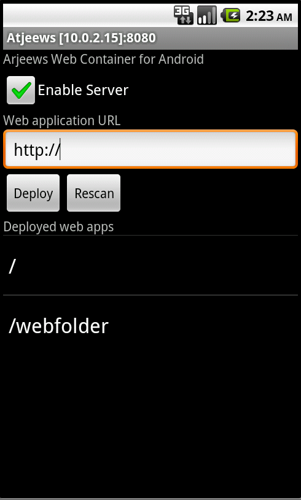

Tiny Java Web Server and Servlet Container
aka Miniature JWS
European quality software made in USA
(with Android SSL support)
Truth is ever to be found in simplicity, and not in the multiplicity and confusion of things.
Introduction
The Miniature Java Web Server is built as a servlet container with HTTPD servlet providing
standard Web server functionality. The server is a small as in Java code
as in a result byte code. General purpose of the Web server is running and
debugging servlets. However, it can be used as a regular web server for sites
with low to medium load. I found also
very convenient shipping a servlet based product packaging with the server, so a user
can start a product just after unwrapping. You can try a web
site hosted on this server on a private Cloud. This web server also works on PDA and smart phones as Android and Blackberry based, or on Windows CE based when JVM installed.
It gives additional flexibility for your phone, since using WebFolder (WebBee web app)
can simplify file synchronization and provide control of your phone from web.
Testimonies
Using tjws with WebServices as a "RMI"/RPC protocol, and with
HTTPS on
top, this is gold! Thanks!
I've downloaded
TJWS and it looks like
exactly what I"e;ve been looking for to use as a local web server to
generate a web application.
I'm using the miniature java webserver on
my zaurus.
I wrote a few servlets for it and I'm very happy with how it performs.
TJWS was the only thing out there I found I could use
as a library, programmatically within unit tests. Thanks for a great
library.
|
Features and Benefits
- About 100Kb footprint (TJWS is the smallest one, like
5 times less than competitors LWS
and Jetty,
more than twice less than Winstone)
- Very fast and reliable, it performs better than some C/C++ based web servers, 10%
faster than Apache 2.x
- Can scale to thousands connections, clustering configuration is about of
development
- A perfect solution for web interfaced applications
- Standard J2EE servlet deployment for .war packaged applications
- Simple configuration, no hundreds of config parameters
- Flexible JSP support
- Limited JSS 3.0 support (JSR 315)
- JSR 356 support (websocket). See release notes
- Built for Java 7 with intelligent downgraded support for Java 2
- Runs on Android and Blackberry platforms out of the box
History
I was looking for a web server with sources to debug some servlets at the end of 1998. One of my findings
was ACME Java Web Server. It was pretty good, but supported only JSS 1.x and JDK 1.02. Since my servlets required a bit more, I have added
support for contemporary versions of JDK and JSDK. I just continued adding
more features and providing bug fixes after. The current version is mostly
compatible with the latest servlet container specification (3.1) and offers also websocket support.
|
Competitors
Main competitors for TJWS are Winstone, LWS, and Jetty. TJWS can successfully compete
with more established and reputable servers as Tomcat, Glassfish, and JBOSS. Main benefits of TJWS are
simplicity and tiny footprint.
Design
Modular design is used for TJWS. It gives a flexibility of creation different configurations
with exactly required features. A heart of TJWS is a light weight servlet container.
A set of predefined servlets extends functionality of the container transferring
it to a web server or/and an application server. Predefined servlets can be eliminated
or redefined for extra flexibility.

Selecting or not J2EE deployment gives an extra flexibility in a final
size of a deployed application. Like for an embeddable or a mobile application is possible
to use Java Personal Profile 1.x compatible servlet container module. For
less critical in size deployment is possible to use J2EE deployment module and
JSP module. Originally provided GNU JSP providers have been withdrawn from latest TJWS version for keeping pure
BSD license, however GNU JSP providers can be reached in previous versions. I do not support them anyway.
Only Jasper is currently supported as JSP provider. However I separate it to avoid any licensing issues.
Base module, and J2EE deployment modules have sizes 110K, and 80K
correspondingly. Jasper's size is about 930K. (I am still looking for help to separate Jasper on runtime and JSP parsing and compilation parts,
it could be beneficial for Android deployment.) App server services module adds 46Kb. And finally websocket module adds 65Kb
Configuration
Most of server configuration is based on command line arguments. The arguments can
be processed from a file as well. Additional configuration values can be provided
over files. J2EE deployed application are configured based on standard web.xml deployment
descriptor.
Command line parameters
All command line parameters start with '-' (dash) and most of them have a following value
part. Here they are:
| p |
specifies port number served by TJWS, default value is 80 for non secure
and 443 for secure configuration, for example -p 8080 |
| t |
specifies name of throttles definition file. It allows to reduce
speed accessing to particular files and improve overall performance of a server.
An example of this file can look like:
# throttle file for tjws.sourceforge.net
* 100000 # limit total web usage to 2/3 of our T1
*.jpg|*.gif 50000 # limit images to 1/3 of our T1
*.mpg 20000 # and movies to even less
mediachest/* 20000 # MediaChest's pages are too popular
|
|
| s |
specifies servlet properties file in old Sun's legacy form. An example of
this file can look like:
servlet./app-bin/tree/*.code=rogatkin.servlet.Dispatcher
servlet./app-bin/tree/*.initArgs=properties=src\javaarchitect\servlet\treeview.properties
servlet./app-bin/chat/*.code=rogatkin.chatservlet.ChatServlet
servlet./app-bin/chat/*.initArgs=properties=C:\\Projects\\ChatServlet\\chatservlet.properties
servlet./app-bin/lunch.code=javaarchitect.servlet.mishka.Friday
servlet./app-bin/lunch.initArgs=properties=src\javaarchitect\servlet\mishka.properties
|
Here servlet. is just keyword. Next part is servlet URL mapping and
servlet name at the same time. Mapping notation was changed since 1.93 to match servlet specification,
so /* should be added to old notation. Next part is dot (.) separator of servlet class name, when code used,
or init arguments comma separated name=value pairs when initArgs is used. |
| r |
specifies realm file. A format of this file looks like:
realmname=path,user:password
|
Path has similar notation as servlet mapping URL. |
| a |
specifies aliases definition file. Every line of the file
specifies one alias entry starting from keyword from=webpath;dir=directory_in_filesysten_to_map, for example:
from=/;dir=src\javaarchitect\servlet\tree\resource
from=/pool;dir=data
|
|
| b |
bind address, if your machine has several IP addresses, then you can
specify which one to use |
| k |
backlog size, by default 50, but can't be less than 2 |
| nohup |
server doesn't expect any terminal window, can be only killed to
stop |
| c |
specifies a web path of CGI scripts directory |
| e |
provides session timeout in minutes and can be negative. Negative value
won't start session cleaning thread and will use a persistent session cookie |
| m |
limits max number of active sessions by a specified value,
can't be less than 10. Default value is no limitation |
| l[ar][f format_string] |
specifies to log accesses with optionally logged user-agent and
referer HTTP headers. When f modifier specified a format string
has to follow which is a valid format string for java.text.MessageFormat class.
Positions of parameters are:
- IP
- RFC 1413 identity
- Remote user
- Timestamp
- Request method
- Request Resource
- Request Protocol
- Result code
- Bytes transferred to client
- Local port
- Referer (if requested)
- User agent (if requested)
|
|
| g |
requests rolling log file after reaching parameter specified line numbers. Can't be made less than 1000, and no rolling used if not specified or parameter is 0. Since 1.102 |
| w |
provides web app deployer class name, by default used rogatkin.web.WarRoller |
| j |
JSP servlet class, org.gjt.jsp.JSPServlet is default; extra init parameters can be specified
for JSP servlet;
syntax of parameters is -class_name_perfix.param_name param_value; note that value
can contain variables like %context% and %deploydir% substituted by actual
values respectfully. Another substitution happens for %classloader% by
a
name of a servlet context attribute keeping an instance of a class loader used for a web
application deployment (available from version 1.15). Version 1.22 and above
introduced another variable %classpath% which substituted by class path used for
loading servlet |
| nka |
no keep alive (server uses keep-alive by default) |
| kat |
keep alive timeout interval in seconds, default is 30 |
| mka |
max number of a connection use in keep-alive |
| sh |
HTTP only attribute for session cookie. Can improve a security. A session
cookie doesn't carry this attribute by default. Since 1.90 |
| ss |
Secure only attribute for session cookie. Can improve a security. A session
cookie doesn't carry this attribute by default. Since 1.99 |
| sp |
persistence for sessions, TJWS is capable storing sessions data
in a portable format and reload them between restarts or nodes of a cluster. Do
not use this option if sessions contain
sensitive, not serializable, or bulky data |
| err |
allows to use own or standard error print stream. If there is no
following parameter class name then used System.err as error print
stream. If a parameter specified, then it's considered as a class name
compatible for assignment to PrintStream. Such class will be instantiated
and used for error redirection |
| out |
allows to define own class which will handle log needs. This
class has to be assignment compatible with PrintStream. An attempt of
instantiation of the class with default constructor happens at TJWS startup, so
the class has to be available in startup class path. This class will handle err
stream too unless -err option is specified. TJWS includes class
Acme.Utils$DummyPrintStream for disabling any log printing. (since 1.26) |
| d |
Log file directory for default logging, System.getProperty("user.dir") is used by default (since 1.30) |
| z |
defines max number of created threads in a thread pool used for
servicing requests. 20 used when the parameter not defined. 0 or negative - do
not use thread pool |
| socketFactory |
specifies class name of socket factory and used for setting
a secure connection. (deprecated since 1.30)
It accepts also any freely specified options in form -option_name option_value.
Such options passed without checking to a custom server socket factory
implementation and other modules of the server |
| acceptorImpl |
specifies a class name of a concerete Acceptor
implementation. Default is Acme.Serve.SimpleAcceptor (since 1.31). See note above about processing
additional connection parameters. Since 1.30 |
| dataSource |
specifies a data source properties file location. Supported by rogatkin.app.Main
run module. Since 1.30
This option is valid only for app server runner (class rogatkin.app.Main)
TJWS .war deployer can process also context.xml file
supplied in META-INF directory of application .war for same purpose. Since 1.98.
A property file can contain the following properties:
- jndi-name (required) - under this name the data source will be registered in JNDI
if name starts with jdbc, then prefix java:comp/env/ will be added when registered in JNDI.
- driver-class - class name of JDBC driver
- url - JDBC connection URL
- user - connection user
- password - connection password
- pool-size - max number of allocated connections, 0 = no size limitation, -1 = no pool used
- access-timeout - timeout in ms before getting an exception on connection request when no connections
are available, 0 means wait forever
- driver-class-path - defines class path to a driver archive and/or a
connection validator class, unless they are already defined in a boot classpath
- prob-query - a query to run against a given connection to verify a
validity, There are two predefined values IsValid and isClosed
used for calling corresponding methods of JDBC connection
instead of a query. Note that
isValid() method is available in JDBC 3.
- exception-handler- a class with static public boolean method validate and two parameters of type SQLException, and Connection
returning false when the connection has to be discarded after the SQLException
Here is a quick map between properties names and context.xml Resource tag attributes:
| jndi-name | name |
| driver-class | driverClassName |
| url | url |
| user | username |
| password | password |
| pool-size | maxActive |
| driver-class-path | driverClassPath |
| prob-query | validationQuery |
|
TJWS processes several Java System level definitions in addition to command line arguments
specified as JVM's -D arguments:
tjws.serve.log.encoding - this definition specifies encoding
used for log messages, it can be very convenient to debug multi lingual web
applications.
tjws.proxy.ssl - this definition specifies that server should process
X-Forwarded-xxxx headers for calculation remote and server addresses. If value of the property 'y',
then SSL is considered to be handled by a proxy server. (Since 1.71)
java.protocol.handler.pkgs - this definition is used by SSL
socket factories implementations to define a different protocol handler
packages, than standard com.sun.net.ssl.internal.www.protocol
The following definitions are used by J2EE servlet/deployer module:
tjws.webappdir - specifies path to web application war files location
for automatic deployment. By default TJWS_ROOT/webapps directory is used.
tjws.webclassloader - specifies custom class loader class name used for loading classes
from war file. The class loader must to have constructor accepting parameters as URL[] and
ClassLoader. Since 1.83
tjws.wardeploy.warname-as-context - see details below.
tjws.wardeploy.as-root[.virtual_host_name] - defines context name/war name used for deploying
in root, e.g. -Dtjws.wardeploy.as-root=<app_context/war_name> If virtual host name part is presented, then it defines a fully qualified
host name for which the root context is set. (Since 1.71)
tjws.virtual - defines deployment of web applications in virtual hosting environment.
When the definition is specified, TJWS J2EE web applications deployer looks in all subdirectories
under automatic web application deployment directory and considers directory name as virtual
host name and directory content as automatic web application deployment directory for
corresponding virtual host.
For example:
TJWS_ROOT/webapps
www.travelspal.com
travelspal.war
webfolder.war
www.7bee.org
sqlfair.war
webchat.war
xumster.war
jaddressbook.war
(Since 1.71)
class_name.debug - this definition is passed to JSP provider
for allowing debug specified class name.
tjws.fileservlet.usecompression - this definition advises to compress text
content response when a client can accept it. To make this suggestion per application,
use tjws.webapp.<context_name>.compressresponse Since 1.31
tjws.fileservlet.suppressindex this definition advises the file servlet
to do not show content of a directory when an index file can't be found. Since 1.96
tjws.wardeploy.dynamically - this definition advises J2EE deployer for
monitoring .war files updates and redeploy corresponding applications without the server
restart. Optional value of this definition specifies time interval in seconds between checks. Since 1.50
tjws.wardeploy.noincremental - instructs TJWS redeploy entire web application when newer version of
.war detected. Default is incremental deployment overriding only older files and not touching added. Since 1.93
tjws.webapp.context name.init.timeout - specifies init timeout in seconds of
corresponding web application by context name, use * if you need to define it for all contexts
tjws.webapp.context name.threadpoolsets - specifies core, max threads,
and queue size a thread pool of corresponding web application by context name, use * if you need to define it for all contexts. Since 1.80
tjws.webapp.debug - value yes turns on additional debug print outs for J2EE deployed apps
tjws.app.orb.arguments - this definition can provide comma
separated parameters used for ORB initialization. Since 1.50
tjws.app.main - name of main class started with offering app server services. TJWS supports not
only web applications, any desktop Java application can get benefits of app server services
as JNDI and container managed JDBC connections. Since 1.50
tjws.app.main.classpath - class path for main application class specified
as definition tjws.app.main, unless the main class can be resolved from boot class path. Since 1.50
tjws.app.main.striprightparam - specifies a position in command line arguments which have to be not
passed to a main class defined in tjws.app.main. It gives flexibility of separate
command line arguments used by launched application and app server services itself. Since 1.50
tjws.app.main.stripleftparam specifies a position to cut from left. See description of
tjws.app.main.striprightparam. Since 1.50
tjws.websocket.container "true" value specifies that websocket end points can be deployed in scope of TJWS itself (not in scanning from a .war packaged web application)
TJWS class path is used for such deployment. The option is useful for embedded usage of TJWS. Since 1.111
Since TJWS has a long history it supports as a legacy way of deployment and configuration
of servlets as a new .war (web.xml) based. The legacy deployment uses property
files, like servlets.properties and aliases.properties. J2EE way is based
on web.xml and config.xml files. When a legacy way used, the server can keep a minimal
configuration and run on JDK version started from 1.2 (Actually the current version has 9 JDK
1.4 dependencies which can be easily corrected if JDK 1.2 is a real requirement). Websocket
extension deployment uses the modern annotated classes mechanism.
Security
Security becomes more important nowadays, so I decided to add SSL support to
TJWS. Thanks JSSE for making that fairly easy. Here some tips how to install SSL
support to the server.
- Download JSSE from Oracle's website or use JDK1.4.2 or later already including this extension.
- Generate certificate using command like: keytool -genkey -keypass 123456 -storepass 123456 -keyalg RSA
Read more details in keytool documentation when you need a certificate signed
by CA. Tomcat's how-to for SSL can be useful also.
- Add command line parameter -socketFactory socket_factory_class_name
and enjoy the show.
There are three SSL supporting socket factories packaged with TJWS - Acme.Serve.SSLServerSocketFactory
, rogatkin.web.DoubleHeadSocketFactory (available from v 1.17), and
rogatkin.wskt.SSLSelectorAcceptor (available from v 1.110). First is recommended to use
with core TJWS, when second with J2EE deployment module since it provides
supporting http and https at the same time and requires Java 5+. Third is required for websocket configuration. 7Bee script
contains examples of usage two factories. Command bee -Dsecure=true runs TJWS using SSLSelectorAcceptor, and bee -Ddoublehead=true runs DoubleHeadSocketFactory.
Additional command line parameters can be specified with each factory like :
- algorithm - encryption algorithm, SUNX509 when not specified
- clientAuth - requires client authentication, false when not
specified
- keystoreFile - key store file path, user_home/.keystore by
default
- keystorePass - key store password, empty string when not
specified
- keystoreType - type of key store, Oracle's JKS when not specified
- protocol - secure protocol, TLS when not specified
- backlog - backlog value, 1000 by default
- ifAddress - bind to specified address
- port - bind to specified port
- ssl-port SSL port (only for DoubleHeadSocketFactory and rogatkin.web.DualSocketAcceptor
)
- ssl-backlog backlog size (only for DoubleHeadSocketFactory and rogatkin.web.DualSocketAcceptor)
Note that some secure socket options will override options specified in a
regular way.
You may also adding your own socket factory implementations. See the
packaged socket factories as a reference implementation.
Starting from 1.30 Socket Factory concept was replaced by Acceptor. It allowed to
use Selector based processing requests with 10% improved performance and required for websocket.
Five concrete Acceptor implementations are available:
- Acme.Serve.SelectorAcceptor - non secure, channel based implementation (use with websocket in non blocking IO mode).
- rogatkin.wskt.SSLSelectorAcceptor - secure, channel based implementation (use with websocket in non blocking IO mode).
- Acme.Serve.SimpleAcceptor - non secure, server socket based implementation, is used by
default.(since 1.31)
- Acme.Serve.SSLAcceptor - secure, SSL socket based implementation.
- rogatkin.web.DualSocketAcceptor - combined secure and non secure sockets implementation.
The author appreciates if you can share own implementations of Acceptor.
J2EE deployment
For J2EE deployment you need to make sure that war.jar is specified in classpath
when you start the server. It will create webapps directory (configured location) where you can put your
.war files for auto deployment. Deployment gets updated at startup absorbing any changes from source .war file,
however all changes done in target deployment directory are preserved. TJWS can monitor also source .war changes
during runtime when tjws.wardeploy.dynamically is specified, and redeploy
application if changes were detected. server.xml
isn't supported and most of server specific parameters have to be specified as command
line arguments, or stored in a flat file as cmdparams. All examples of startup
scripts are presented in directory bin of a distributive archive. Most of examples
contain both ways of server configuration and application deployment. Note that
deployment descriptor (web.xml) parameter display-name defines a context
path of a deployed web application. If you want to have context path matching to
.war name then add system property tjws.wardeploy.warname-as-context set to yes.
For command line it will look like -Dtjws.wardeploy.warname-as-context=yes . (Since
1.24) To prevent application update at startup time you need to remove corresponding
.war from deployment directory. It gives also a way to deploy web applications without
.war just manually create web app directory structure. Check section 'Embeddable
application' for more options of deployment and distribution of applications.
Supported web.xml deployment tags are:
- context-param - yes
- filter - yes
- filter-mapping - yes
- listener - yes
- servlet - yes
- servlet-mapping - yes
- session-config - yes
- mime-mapping - yes
- welcome-file-list - yes
- error-page - yes
- taglib - by JSP provider
- resource-env-ref - yes
- resource-ref - yes
- security-constraint - in work
- login-config - in work
- security-role - in work
- env-entry - yes
- ejb-ref - no
- ejb-local-ref - no
- new JSR315 - yes
- new JSR356 - yes
- multipart-form - this is non standard tag carries a function of a casual multipart request processing similar to Resin. Since 1.112
App server services
TJWS includes app server services module. It takes some usable shape from version 1.50. There are two services offered:
- Data source with connection pooling
- JNDI
For using these services app.jar has to be in class path, or/and used for starting the server. The bin directory includes an example of starting TJWS with app server services on. Data sources get configured from properties files specified as �dataSource command line option. JNDI properties as context factory and JNDI URL get pre-populated as
rogatkin.app.SimpleJndi and http://localhost:1221
correspondingly, unless they are defined as system properties. JNDI is capable to register local and CORBA objects. First running JNDI takes care of JNDI master repository, and all following JNDI starts will be registered in the master repository. If the master repository's gone, then all clients won�t be capable to register own CORBA objects or access them, until the repository is back. There is no persistence for stored references, so you should
do a defended programming and reregister references in case of crashing the master repository.
context.xml
Data source definition can be specified in context.xml placed under META-INF directory of .war structure. (since 1.98)
3.0 Deployment descriptor
Multiple URL patterns can be defined anywhere. Some other features are under
consideration. Work on
processing annotations in a servlet code started. Async and multi part features are supported.
Jasper JSP provider integration
You can use Jasper JSP provider for servicing JSP pages inside an
application. Since the original Jasper is a bit bulky for TJWS taste, it's
recommended to strip it to a manageable size. TJWS distribution
includes instructions how to modify, build, and connect Jasper in
jasper.html of webroot directory Jasper of respectful Tomcat versions 5.x, 6.x (since 1.28), and 7.x (since 1.83) is supported.
Running it as a service on all Windows platforms
You can run the server of the version (>1.42/1.7) as Windows service. File
servservice.exe added to the distribution. I wrote this service for JDK
1.4. It works without a change for Java 5 and 6. C source code of service implementation is included. A service starter considers that all TJWS files reside in the same
directory specified at installation of the service. .jar files can be in sub
directory lib. Command line parameters have to be specified in cmdparams
file. Use -nohup switch to avoid a console read attempt. To get help line, run servservice.exe
-help. Parameterless version of servservice.exe is considered as a
service.
Note that arg[0] which supposes to give a fully qualified name of a service
executable on some versions Windows ((like XP) doesn't do that. For this reason
you have to specify a fully qualified path as the last parameter of an
installation command.
There is no requirements to have servservice.exe in the same
directory where TJWS is. Here is an example of an installation command:
servservice.exe -install "C:\Project Files\tjws" "C:\Project Files\gnujsp\lib\jspengine.jar" TinyJavaWebServer TinyJavaWebServer "C:\Project Files\tjws\servservice\Debug\servservice.exe" -Dtjws.wardeploy.warname-as-context=yes
Running it as a service on all Linux platforms
A Linux service script example tjwserv is provided in bin directory of the distribution archive.
It has to be edited to reflect particular TJWS installation directory structure. The script has to be stored in
/etc/init.d/ location. Use command update-rc.d tjwserv defaults to enable the service.
You can control it using command service tjwserv <start|stop|restart>. Look in Raspberry PI
setup section for enabling service on Arch Linux and other systems using systemd.
Embeddable application
Recently, a new type of application appeared on the market. After starting an
application is launching a browser which represents its UI. This approach has many advantages and becomes more
popular and wider used. The
Miniature Java Web Server is a right tool for creation such kind of application.
Download
and double click JAR in Explorer or launch it from a terminal typing java -jar
finesearch.jar,
then point browser to http://localhost:8080/finesearch
and enjoy the web interfaced application. Starting from version
1.21 TJWS includes a launcher of a .war packaged application from command line or a
start script. The feature is very similar to used by Winstone. Use:
java -jar webapplauncher.jar war_file_name [optional standard TJWS CLI
parameters]
for example:
java -jar webapplauncher.jar "C:\Project Files\finesearch\finesearch_app\finesearch.war"
Note if extra command line arguments are not specified, then TJWS will try to
discover them from cmdparams located in a working directory.
Version 1.22 and above makes launching Web UI application even more simpler. Web
application .war can be packaged inside of TJWS .jar file allowing one click
launch. To package web application .war with TJWS use target 'embedded' of
7Bee
build tool and answer on few simple questions. For example:
C:\Project Files\tjws>bee
embedded
Launcher's been built.
Enter command line arguments for app [-nohup -p 80]? -p 80
Enter application .war file location? C:\Project Files\finesearch\finesearch_app\finesearch.war |
As result finesearch.jar is created in lib directory which is launchable
using java -jar finesearch.jar
When JDK 6 is used you can get
it running in system tray, use javaw for JAR launching.

System tray menu will contain an item for going directly to an application
with web UI (since 1.24).
Use 7Bee target asembedded, when web application needs container provided
JNDI and data sources. (since 1.50).
J2EE without application server
TJWS gives a good possibility to create enterprise class J2EE applications
without an expensive and heavy weight application server.
WebBee library will
take care of SOA registry, MVC servlet framework with template based
presentation layer, data persistence and
much more. Check out a demo
of a real application based on this approach. New generation of web application building blocks WebBee
with annotated JDO and forms makes creation of rich application possible even for Android platform.
Embedded usage
TJWS can be successfully used as a part of another Java application. Acme.Serve.Serve
can be instantiated as a Java bean with following setting parameters in its public member
arguments and log print stream in its public member logStream.
Use method addServlet(..) for adding servlets. Note that
server will do nothing without servlets. Default file (HTTPD) and cgi servlets can be added
calling addDefaultServlets(...). Server can be started calling
method serve() and stopped calling notifyStop().
Note that serve() doesn't exit until a server runs, so stopping should be called
from a separate thread, or serve() is ran in a separate thread.
A minimal application with embedded TJWS looks like:
public class Test {
public static void main(String... args) {
class MyServ extends Acme.Serve.Serve {
// Overriding method for public access
public void setMappingTable(PathTreeDictionary mappingtable) {
super.setMappingTable(mappingtable);
}
// add the method below when .war deployment is needed
public void addWarDeployer(String deployerFactory, String throttles) {
super.addWarDeployer(deployerFactory, throttles);
}
public void addWebsocketProvider() { // add if plan to deploy websocket endpoints
addWebsocketProvider(null); // list of class path file components can be provided here
}
};
final MyServ srv = new MyServ();
// setting aliases, for an optional file servlet
Acme.Serve.Serve.PathTreeDictionary aliases = new Acme.Serve.Serve.PathTreeDictionary();
aliases.put("/*", new java.io.File("C:\\temp"));
// note cast name will depend on the class name, since it is anonymous class
srv.setMappingTable(aliases);
// setting properties for the server, and exchangeable Acceptors
java.util.Properties properties = new java.util.Properties();
properties.put("port", 80);
properties.setProperty(Acme.Serve.Serve.ARG_NOHUP, "nohup");
properties.setProperty("acceptorImpl", "Acme.Serve.SelectorAcceptor"); // this acceptor is requireed for websocket support
srv.arguments = properties;
srv.addDefaultServlets(null); // optional file servlet
srv.addWebsocketProvider(); // enable websocket
srv.addServlet("/myservlet", new MyServlet()); // optional
// the pattern above is exact match, use /myservlet/* for mapping any path startting with /myservlet (Since 1.93)
Runtime.getRuntime().addShutdownHook(new Thread(new Runnable() {
public void run() {
srv.notifyStop();
srv.destroyAllServlets();
}
}));
srv.serve();
}
}
The File servlet without aliases definitions maps your file system directly to a web accessable one, so setting up aliases is recommended.
J2EE servlet deployment is possible in an embedded usage. You need to assure
that JDK 1.5 or above is used and war.jar is in a class path of an
application.
Add a line as below:
((Test$1)srv).addWarDeployer(null, null);
The default war deployer will look in directory "user.dir/webapps" and
deploy all wars there. You can redefine a deploy repository by setting
System.setProperty("tjws.webappdir", newDeployDirectory);
prior of calling addWarDeployer()
TJWS works perfectly on Android platform as embedded server enriching your Android application by
a capability to receive uploads, check
Kamerton application using TJWS for uploading music to Android device.
Mobile and appliance usage
TJWS provenly runs on wide specter mobile devices as Sharp Zaurus, Windows CE/Mobile, all Android, and Blackberry platforms. Java
gives great portability of TJWS between different mobile devices.
Run it on Zaurus
Zaurus version is currently retired, since Zaurus has been replaced by Android.
Run it on Windows Mobile
Since Microsoft dropped Java and allow to install only products from mobile store on Windows surface tablets, here is
no good possibility to run TJWS. So here is a plan to create Objective C and C++ library supporting core
functionality of TJWS to be able to run it on iOS and Windows Mobile platforms.
Run it on Raspberry Pi
TJWS is naturally created for running web applications on Raspbery Pi. It will outperform most of other application
servers on the platfrom including Jetty, JBOSS and Tomcat. Start time for it is just around 11 seconds, when you can
observe times close to 1 minute with
other application servers. Here are few notes helping to start using it:
- Debian "wheezy" is preferred as OS for Raspberry Pi and TJWS
- Download Oracle JRE marked as Linux ARM v6/v7 Hard Float ABI
- If you use Linux "dd" utility on Ubuntu to transfer Debian image to SD card, then keep it mounted and
use device name as /dev/sdc (last letter can be "b" for some systems)
- There is a good resource for beatifying JRE installation
If you plan to use Raspberry Pi mostly as server operating 24/7, then I recommend to install Arch Linux especially if your network connection is wireless.
Since Arch Linux specific is less covered on net, I prepared my own guide which can help you start using
TJWS faster.
Raspberry Pi development is certainly addicting, so if you are on same boat feel free to drop me a note.
Run it on Android devices
TJWS provides Android packaging for run the server on Android devices. This packaging got name
Atjeews and provided as a separate download. Atjeews is also available at Google Play under same name. Atjeews is just a small server launcher
Java program. The server runs FileServlet against Android root directory "/". You can deploy
any web application on it just loading war files. Atjeews can be mapped to any port and supports SSL.


The following command will work:
dx --dex --output=<original_jar_file> <dalvik(dex) jar>
Please note that your web
application has to be JDK 1.5 compatible since Android OS below version 3.0 supports only Java 1.5.
7Bee script (7Bee version of 1.1.1 or above required) is availble for converting war files to format supported by Android platfrom.
The script is highly recommended to use when your web application includes JSP pages, since
the script take care of precompilation of JSP files and DEX converting. Atjeews is
bundled with Jasper to run JSP. See more about Atjeews here.
Since 1.83
Blackberry BAR Atjeews packaging added to version 1.95. It supposes also appearing in RIM AppWorld as a free application.
Run it on iPhone?
There are several options to run Java applications on iPhone and iPad. You will need to jail break your iPhone though.
Since Steeve isn't with Apple anymore, there is a good chance for porting Davlik to iOS platfrom. I heard that iOS 9.0 (current is 8.0) will have Java included
Use TJWS as proxied
TJWS can be used with proxy servers. Definition tjws.proxy.ssl
can be specified to correctly determinate remote host and access protocol.
To use Apache as a proxy server you can:
- make sure that mod_proxy enabled in httpd.conf
- add below directives in httpd.conf
ProxyRequests On
ProxyVia On
ProxyPass /context_path/ http://tjws_host:<TJWS port>/web_app_context/
ProxyPassReverse /context_path/ http://tjws_host:<TJWS port>/web_app_context/
# for pushing authentication
RewriteEngine on
RewriteBase /
RewriteCond %{REMOTE_USER} !=""
RewriteRule .* - [E=E_USER:%{REMOTE_USER}]
RequestHeader set my_new_header %{E_USER}e
Another example of Apache configuration to use proxied TJWS as virtual host:
<VirtualHost *:*>
ProxyPreserveHost On
ProxyPass / http://localhost:8080/
ProxyPassReverse / http://localhost:8080/
ServerName www.tjws.com
</VirtualHost>
To use Nginx as a proxy server :
server {
listen 80;
server_name localhost;
...
location / {
proxy_pass http://localhost:8080;
proxy_set_header x-Forwarded-for $remote_addr;
proxy_set_header X-Forwarded-Host $host;
}
...
Please note that Nginx doesn't support keep alive for proxy requests yet, so you can observe some performance degradation.
Download
Please
download
(version 1.114)
Visit Atjeews at GitHub for Android version of the server and download APK at
Google Play.
Sources of TJWS are available on GitHub
Note: Base TJWS is Java 2 (JDK 1.2) compatible, SSL
module requires extra classes introduced in JDK 1.3-1.4. Base TJWS runs also on servlet specification 2.3, when
the rest of server is 3.1 version compatible. It makes building of TJWS a bit tricky. Some methods originally introduced in
TJWS are conflicting with JSR 315, so the author is looking how to eliminate this conflict with a minimal impact
of backward compatibility. J2EE war deployment
requires Java 5 (JDK 1.5, 1.6, 1.7, or 1.8). If you would like to make own build, then you will need to download 7Bee Java
based build tool. The env.xml assumes target 1.4 for TJWS and
1.7 for the
rest. It may need being edited to provide SDK paths and targets. Modify variable 'j2ee
target version' in env.xml to 1.5 to avoid using System tray feature
of JDK 1.6 and up. Specify env.xml variable 'android' as yes to compile the server to run on Android devices (since 1.83). App servers features are not supported for Android though.
Since a build tool is a matter of personal taste, you can
use any other favorite build tools.
Attention POSIX systems users, the distributive archive has access attribute
not set, so execute chmod -R +rwx WebServer after unpackaging WebServer-nnn.zip
Zaurus version get here and .ipk
version (use kill to stop)
Last changes history
- nohup option
- getSession() never null fix pointed by Warren E. Downs
- messed sessions fix when
browser sends more than one session cookies
- session persistence between server re-runs (here are some
issues when classes loaded under WEB-INF/..)
- fixes realm not got applied to servlets, hanging when
accessed reserved device, like con:, prt: pointed by users (Niel Markwick,
and others)
- added J2EE web app deployment and JSP
support (JASPER) as a separate module
- support of filters and listeners, requested by Argan
- keep-alive support, requested by Torben Bruun
- err option to keep System.err unchanged or customize it,
requested by Xavier
- many keep-alive fixes came from
Martin Egholm Nielsen
- fixes in web app servlet most reported by Nicolas Prochazka
- supporting HTTP and HTTPS transports in the same instance
- exit out of serve() by Andr� Kischkel
- thread pooling for servicing requests
- unavailable, and path pattern related fixes
- web app launcher including embedded .war
- JSP engine with spec 2.0/2.1 support as Japser
- filter for include, forward, and error. Multiple URL patterns
- HTTP Range request support for file servlet
- added Response Buffer and Request Dispatcher support in base server
- flexible support of server sockets including Selector based
- default log directory by Italia Roberto
- compression of text content by file servlet
- stronger security for session id
- fix: not eating unconsumed part of input stream for keep-alive connection (reported by Bill Burke@redhat)
- dynamic redeploy advised by poll results
- data sources and connection pooling advised by poll results
- missed processing of charset in POST request pointed by Jack
- virtual host by ganesan
- closing all connections at stop requestedd by Weinan Li@redhat
- JSR 315 Comet support requested by Ivan Voronov
- Base server vulnerability related directory transversal using '..' pointed by Jo�o Sampaio
- Android compatibility of war deployment requested by Alex Xin
- Adjustung behavior matching to servlet specification done by Andreas
- Using servlets mapping URL patterns matching to servlet specification including extensions mapping, by Bruno B
- Accurate handling keep allive by Andreas
- Proper freeing resources in CGI servlet by Frank
- SSL handler default class updated by Jan
- Reliable detection of chunked encoding by Darren
- JSR 356 (websocket) by Robert
Tested web applications
I use TJWS primary for my business, however I verified functionality of some
popular web applications. Here are just few of them:
- Apache Slide (WebDav) and also WebDav servlet from GitHub
- jCVSWeb/jCVSServlet 1.41/1.01 (CVS web front-end)
- Pebble 2.2 (Blogger solution)
- DaveNPort 0.9.10 (Samba web front-end)
- Apache Axis2 1.0
- JASIG - single sign on service
- SimpleCaptcha
- Quercus® (PHP engine)
- Apache Myfaces
- MetricStream EGRCP
- Google Web Toolkit (GWT)
- Stripes (JSP framework)
- Red5 (Streaming media server)
- OIOSAML.java SAML SSO servlet filter
- IBM's WeatherServer (Comet)
- JEExplorer from Denmark
- VAADIN another flavor of popular GWT
- Javamelody enterprise application monitoring and profiling tool
- Music Barrel - a music jukebox for Raspberry PI and PC
Build Tool
TJWS is proudly built using most sophisticated Java build tool 7Bee.
The tool is available in sources at GitHub. Another build tools can be used as well, although I support 7Bee only.
There is also no way to convert .war files to be deployed on Android, than using 7Bee. The following values needed to be provided in env.xml to build TJWS:
- SERVLET_LIB - fully qualified path to servlet.jar or other lib/directory containing
JSS 2.3 classes
- SERVLET_LIB_30 - fully qualified path to servlet.jar or other lib/directory containing
JSS 3.0 classes
- SERVLET_SRC - fully qualified path to sources of JSS classes, used only for packaging
text resources in launcher packaging and can be omitted, unless launcher has to be built
- SERVLET_BUILD - fully qualified path to binaries of classes of JSS, used only for packaging JSS
in launcher packaging and can be omitted, unless launcher with JSP has to be built
- JSP_LIB - fully qualified path to jsp.jar or other lib/directory containing JSP API classes
- WEBSOCKETS_CLIENT_LIB, and WEBSOCKETS_SERVER_LIB - fully qualified pathes for JSR 356 API client and server
jars respectfully
Note: environment variables for versions prior 1.28 are slightly different.
JVMs
TJWS was tested with most popular JVMs under Windows, Linux, Mac OS, and Solaris
platforms and also on mobile platforms as Sharp Zaurus, Android, and Windows Mobile.
Oracle, IBM J9, JRocket, Open JDK, Dalvik,
and GNU VMs are capable to run TJWS.
Copyrights
The Miniature Java Web Server carries all copyrights of the original author
as stated in the license you can find in any source file.
License
The Tiny Java Web Server inherited BSD like license from the original
code, check any source file for details.
Support
I provide support of the server on voluntary basis. Feel free to send bug report on enhancement request. I also provide consulting service
related to creation of web 2.0 J2EE scalable applications. See an example ResumeFair
Discussion forum
Feel free also to share your concerns, questions, and discoveries in
the Discussion forum.
Extra Bonus
Version of 1.07 and later includes some useful web applications packaged as
.war files and deployed at first server run. To enjoy the applications just
follow a link on a start page. If you do not want to have these applications
deployed, just remove corresponding .war files from webapps directory
before first server run.
Help wanted
I'm looking for developers to finish work on pending web.xml, fragment.xml, and common.xml instructions. Another plan is adding SOAP/RPC support for easy SOA.
SSI servlet is also waiting to be developed. There are tons opportunities to develop Android web applications.
Check also...
MediaChest Comprehensive tools to handle all media files as digital photos and music
xBox - Bean box supporting XML serialization
(do not confuse with proposed
later java.beans.Encoder)
jAddressBook is an address
book with a float XML format of addresses and another profile information, web 2
UI.
Music Barrel Conver any computer including Raspberry Pi to
a music jukebox remote controllable from your phone or tablet.
Remote file management - the tool every IT professional or advanced user must have, web interfaced file manager with many useful functions.
Contact
Bugs, questions, and enhancement requests you can send to
Dmitriy
Rogatkin.Happy web servicing!
© 2015
 7Bee
7Bee